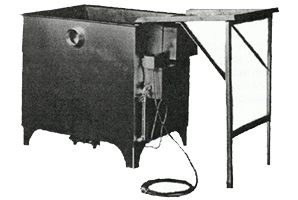

Ashley Manual Gas Scalder
Model M-38
Gallon Capacity 38
Burner Capacity 40,000 BTU
Length 20"
width 20"
Depth 23"
Shipping weight 390lbs
Details:
Poultry Scalder Manual Ashley Machine Processing Equipment. Model M-38 Galvanized steel. Gas (Set up for propane/LP Gas can be converted to natural gas) Adjustable thermostat automatically maintains water temperature 110v AC.
Call for Pricing
US and Canada 1-800-521-4886
Since 1940 Ashley has been supplying performance equipment to the poultry processing industry worldwide.